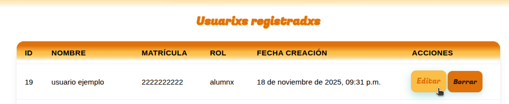
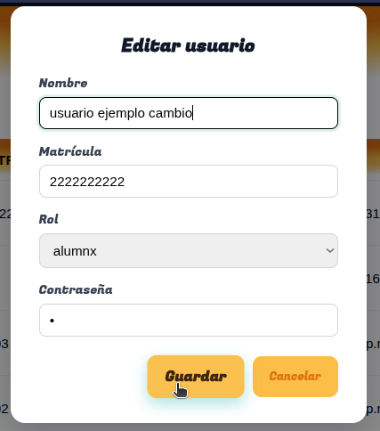
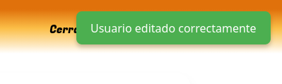

La última columna de la tabla de usuarios registrados llamada "Acciones" contiene dos botones, uno para borrar el usuario y otro para editarlo, solo se debe dar click en el botón "Editar"

Llenar el formulario con los datos que desean ser cambiados, dejando los que se quedarán intactos sin llenar y presionar en el botón "Guardar"

Al terminar volverá al panel inicial acompañado de una notificación de "Usuario editado exitosamente."

Nota: EL TIPO DE USUARIO NO PUEDE EDITARSE UNA VEZ REGISTRADO.